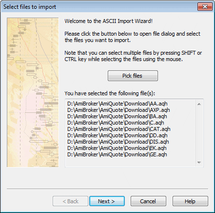
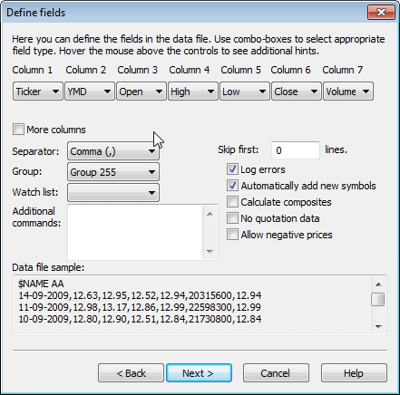
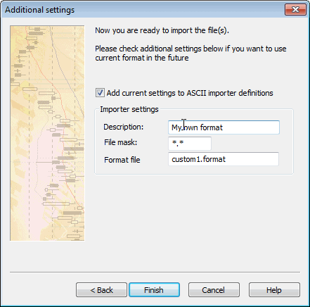

ASCII Import Wizard provides an easy way to import your quotation data files as well as define your own import formats for future use. Note that the wizard offers only a subset of features available in ASCII importer, so it is provided for novice users only.
The wizard guides you through three simple steps
Step 1. Picking the files

In this step, you select the files you want to import. Just click the Pick files button and you will see a file dialog box. Browse to the folder where your data files are located and select the file(s). Please note that you can select multiple files by holding the CTRL or SHIFT key while clicking on the files. After making your selection, please click Open.
A complete list of files that you have selected will be displayed in the field at the bottom of the wizard window. Please check if the list is correct; if not, click "Pick files" to correct your choice.
Step 2. Defining fields

In this step, you define the types of fields in the data file. For your convenience, a data file sample is shown (the first few lines of the first selected file) at the bottom of the window.
To define fields, please select appropriate field types from Column N combo-boxes. For example, if the first field (column) in your data file is a symbol ticker, please select "Ticker" from Column 1 combo-box. If the second field in your data file is a date in Year-Month-Day format, please select "YMD" from the second combo-box. You can also select DMY for Day-Month-Year dates, MDY for Month-Day-Year dates. Other field types available from the wizard are: "Open", "Close", "High", "Low" (for prices), and "Volume".
Note about the dates: AmiBroker recognizes both 4-digit and 2-digit year dates. As for months, both numbers and three-letter codes ("Jan", "Feb", ...) are allowed. Also, day, month and year may be separated by any of the following characters: / (slash), \ (backslash), - (minus sign) or may not be separated at all. All you have to do is to specify the order: DMY, MDY, YMD. For example, valid YMD dates are (31st December 2000):
20001231,
001231,
2000-12-31
2000/12/31
2000-Dec-31
00-12-31
00/12/31
00\12\31
If your file has more than seven columns, please check More columns box and you will see additional combo-boxes.
The remaining controls here are:
Group: Here you should select to which group new symbols are added
Watch list: Here you should select to which watch list new symbols are added (if empty, they are not added to any watch list)
Separator: Here you should select the character used as a field separator (comma is the most common)
Skip lines: This tells AmiBroker how many initial lines should be skipped (ignored); for example, the first few lines of the file should contain a comment or other information that should be ignored, and this is the place to define it
Log errors: This tells AmiBroker that it should log all errors to the file (import.log). In case of any errors, this log will be displayed to the user after the import process has finished.
Automatically add new symbols: This tells AmiBroker to add the symbols that appear in the data file but do not exist yet in the AmiBroker database.
Calculate composites: This tells AmiBroker to calculate advance/decline figures and volume for indexes after import (this requires composites to be set up properly before importing)
Allow negative prices: This tells AmiBroker to allow negative numbers in close, open, high, and low fields. By default, zero and negative values are NOT allowed.
No quotation data: Allows you to import data that do not contain prices. For example, ticker lists and/or categories.
Step 3. Additional settings

By default, the format you have defined is for single-use only. It is okay for novice users and for experimenting with the wizard.
If you, however, want to make your definition permanent and available in the future via ASCII importer, you should check Add current settings to ASCII importer definitions box. Then you should enter the Format description, File mask, and Format file name (or you can accept automatically generated defaults). If you do so, you will be able to use the format defined in the ASCII importer window - just by selecting your own format (as typed in Format description field) from the "Files of type" combo-box of a file dialog box.
Whatever you decide, you should click the "Finish" button to start importing your data.